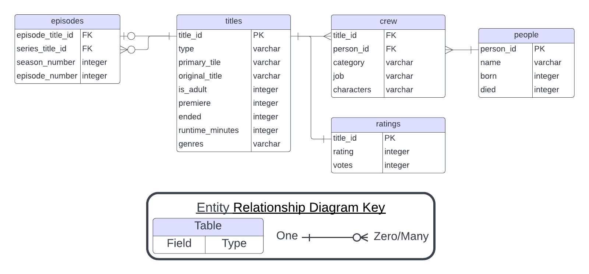

3 Data Stores
A data store is repository for persistently storing and managing collections of data which include not just repositories like databases, but also simpler store types such as simple files, emails etc.
Wikipedia
Once you have decided on a data structure, the next decision to make is what type of data store to use for data storage. A data store is a repository for storing and managing data. While this workshop covers exclusively digital data stores, for most of human history, data stores were analog. Even today, we still use analog data stores like libraries, museums, and filing cabinets. Data stores have two primary functions. First, they need to facilitate people accessing the data (reading) and making changes to it (writing). Second, they need to preserve this access over a period of time.
Regardless of your data’s structure you have two general options for how to store your data digitally: in flat files or in a database.
Probably the most common type of data store is a flat file. A flat file is stand alone file on your computer that is not linked to data elsewhere. You can store tabular data in .xlsx and .csv files, tree data in .xml and .json files, graph data in .GML and .DOT, and spatial data in .GeoJSON and .GeoTIFF files. All of these file types have applications you can use to access and modify your data, or you can load the data into a programming environment like R or python. In addition, some of these file types, like csvs and jsons are human readable, meaning you do not need special software to access or modify the data they contain.
In comparison, a database is an organized collection of data that is linked or related in some way. Users can interact with a database through specialized software called a database management system, often abbreviated DBMS. Databases are not generally human readable. Databases have several key characteristics that differentiate them from other data stores like flat files.
Structure - Databases can store data with structures ranging from low to high complexity.
Scalability - Databases can store vastly more information more than flat files. Additionally, databases support substantial computing upgrades, which means you can maintain performance as your data set grows. Even if you upgrade your computer, you still can’t have more than 1 million rows in an Excel file.
Access - Databases allow multiple people to interact with data at the same time without locking people out or introducing conflicts. They also provide fine-grained controls on who can access, modify, and delete data.
Databases can also formalize some processes that should be done on flat files but often are not. The first of these is version control. When working with data it is vitally important to define which version of the data is the correct and up to date. This is particularly important when multiple people have the data stored locally on their computers. Databases provide a definitive version of the data that users can access remotely. This ensures that everyone working on a project uses the same data.
The second is administration. Because databases can set controls over who has access to what, you can control who has the ability to add data to and modify the database. You also need to designate someone to be in charge of fixing things if something in the database breaks. This is also true for flat files but because everyone has the same access it is often not clear whose job it is.
Some databases also provide tools to prevent mistakes and maintain data integrity. This includes restricting data to specific data types or specific sets of values. This means if you type a “w” instead of a “2”, the database will tell you to check your data and try again.
Most databases do not have a Graphical User Interface (GUI) like Microsoft Excel or Google Sheets. This means you will be interacting with the database through a query language. If you already use a programming language like R or python, this will be very familiar to you. If not, don’t worry. Query languages, like SQL, are designed to be simpler and easier to use than most programming languages, but also incredibly powerful.
If you are running into any of the following issues, a database may be the solution to your problems.
Your data set has many repeated values
Your data set contains information about many unrelated or loosely related studies
You are sharing data with multiple people and everyone seems to have a different version
Your data set is so large, your computer slows down or freezes when trying to view it
You have to keep making the same corrections to your data over and over again
Excel keeps converting your columns to the wrong data type
You have so many pivot tables
You have hundreds (or thousands) of data files you need to share with your collaborators
You think PowerQuery is neat but wish people would stop changing the underlying data while you are using it.
You have a hard time finding and extracting the information you need to answer a particular research question
Processing your data requires you to spend a lot of time moving data between spreadsheets by hand.
3.1 Spreadsheets
Spreadsheets, a type of flat file, are a common form of digital data store. If you have used Microsoft Excel or Google Sheets, you have used a spreadsheet. Like some databases, spreadsheets impose a tabular data structure on the data they store. Despite this, a spreadsheet is not a database. Like most modern software, spreadsheet applications have graphical user interfaces, making the barrier to entry very low. Spreadsheet software also offers some built in analysis tools, so you don’t have to learn a new application to do basic statistics and data visualization.
Spreadsheet software also suffers from some drawbacks. They offer limited storage capacity, making it difficult to work with large data sets. Excel and LibreOffice have a maximum row number of a little over 1 million and Google Sheets limits you to 10 million cells. Software operations will also slow down if you get close to their data capacity. This means analyzing large data sets is much more tedious than analyzing small ones.
Spreadsheets also store data in ways that cause a lot of data duplication and make data entry susceptible to typos. In the spreadsheet visualized below, we have data on the Die Hard movie franchise (IMDb 2023). Specifically, we have information about the actors that starred in the series and the movies in which they appeared.
| title_id | person_id | title | name | characters | premiered | runtime | genres | rating | votes | birth | death | role |
|---|---|---|---|---|---|---|---|---|---|---|---|---|
| tt0095016 | nm0000246 | Die Hard | Bruce Willis | [““John McClane””] | 1988 | 132 | Action,Thriller | 8.2 | 936512 | 1955 | NA | actor |
| tt0095016 | nm0000614 | Die Hard | Alan Rickman | [““Hans Gruber””] | 1988 | 132 | Action,Thriller | 8.2 | 936512 | 1946 | 2016 | actor |
| tt0095016 | nm0000889 | Die Hard | Bonnie Bedelia | [““Holly Gennaro McClane””] | 1988 | 132 | Action,Thriller | 8.2 | 936512 | 1948 | NA | actress |
| tt0095016 | nm0001817 | Die Hard | Reginald VelJohnson | [““Sgt. Al Powell””] | 1988 | 132 | Action,Thriller | 8.2 | 936512 | 1952 | NA | actor |
| tt0099423 | nm0000246 | Die Hard 2 | Bruce Willis | [““John McClane””] | 1990 | 124 | Action,Thriller | 7.1 | 380561 | 1955 | NA | actor |
| tt0099423 | nm0040472 | Die Hard 2 | William Atherton | [““Thornberg””] | 1990 | 124 | Action,Thriller | 7.1 | 380561 | NA | NA | actor |
| tt0099423 | nm0000889 | Die Hard 2 | Bonnie Bedelia | [““Holly McClane””] | 1990 | 124 | Action,Thriller | 7.1 | 380561 | 1948 | NA | actress |
| tt0099423 | nm0001817 | Die Hard 2 | Reginald VelJohnson | [““Al Powell””] | 1990 | 124 | Action,Thriller | 7.1 | 380561 | 1952 | NA | actor |
| tt0112864 | nm0000246 | Die Hard with a Vengeance | Bruce Willis | [““John McClane””] | 1995 | 128 | Action,Adventure,Thriller | 7.6 | 405383 | 1955 | NA | actor |
| tt0112864 | nm0000460 | Die Hard with a Vengeance | Jeremy Irons | [““Simon””] | 1995 | 128 | Action,Adventure,Thriller | 7.6 | 405383 | 1948 | NA | actor |
| tt0112864 | nm0000168 | Die Hard with a Vengeance | Samuel L. Jackson | [““Zeus””] | 1995 | 128 | Action,Adventure,Thriller | 7.6 | 405383 | 1948 | NA | actor |
| tt0112864 | nm0001295 | Die Hard with a Vengeance | Graham Greene | [““Joe Lambert””] | 1995 | 128 | Action,Adventure,Thriller | 7.6 | 405383 | 1952 | NA | actor |
| tt0337978 | nm0000246 | Live Free or Die Hard | Bruce Willis | [““John McClane””] | 2007 | 128 | Action,Thriller | 7.1 | 418910 | 1955 | NA | actor |
| tt0337978 | nm0519043 | Live Free or Die Hard | Justin Long | [““Matt Farrell””] | 2007 | 128 | Action,Thriller | 7.1 | 418910 | 1978 | NA | actor |
| tt0337978 | nm0648249 | Live Free or Die Hard | Timothy Olyphant | [““Thomas Gabriel””] | 2007 | 128 | Action,Thriller | 7.1 | 418910 | 1968 | NA | actor |
| tt0337978 | nm0702572 | Live Free or Die Hard | Maggie Q | [““Mai””] | 2007 | 128 | Action,Thriller | 7.1 | 418910 | 1979 | NA | actress |
| tt1606378 | nm0000246 | A Good Day to Die Hard | Bruce Willis | [““John McClane””] | 2013 | 98 | Action,Thriller | 5.2 | 214179 | 1955 | NA | actor |
| tt1606378 | nm2541974 | A Good Day to Die Hard | Jai Courtney | [““Jack McClane””] | 2013 | 98 | Action,Thriller | 5.2 | 214179 | 1986 | NA | actor |
| tt1606378 | nm0462407 | A Good Day to Die Hard | Sebastian Koch | [““Komarov””] | 2013 | 98 | Action,Thriller | 5.2 | 214179 | 1962 | NA | actor |
| tt1606378 | nm0935541 | A Good Day to Die Hard | Mary Elizabeth Winstead | [““Lucy””] | 2013 | 98 | Action,Thriller | 5.2 | 214179 | 1984 | NA | actress |
Looking at the last three columns, there is a lot of data duplication, meaning our data set takes up more space on our hard drive than it needs to. Additionally, if we have to change the information about a single movie or actor, we would have to make that change in many different places, and potentially miss one or make a mistake. If we accidentally left out an “l” in Bruce Willis’s last name, we would have to modify five cells to fix our data.
Finally, most spreadsheet applications store their data locally, so unless you are very careful about version control outside the application, it is easy to end up with people working on different versions of the data. Google Sheets offers shared access and some version control, but still fails to deliver on storage capacity, and data integrity.
3.2 Relational Database Management System
Relational Database Management Systems (RDBMSs), or relational databases, are one type of database. When people use the word “database”, nine times out of ten they are referring to a relational database. Like spreadsheets, RDBMSs impose a tabular structure on the data they contain. A basic relational database is a collection of connected tables. However, they can be more complex. The tables in the database are linked by shared columns, called keys.
Users often interact with an RDBMS through the Structured Query Language (SQL) instead of a graphical user interface, though there are exceptions. SQL is a programming language, but it is one specifically designed for interacting with relational databases. SQL standardizes your interactions with a database, and makes them reproducible. This means it is much easier to ensure everyone is working with the same set of data. Working with SQL is a skill, and will take some time to acquire. However, because of SQL’s narrow scope, is easier to learn than a more complex programming language like python or R.
To learn about using SQL in practice, check out DataLab’s Intro to SQL (reader, workshop) and Spatial SQL (reader, workshop) resources.
3.2.1 Relationship keys
A relationship key is a column or pair of columns that links two tables. One example of a relationship key you may use is a student or employee ID number. You can use that number to link information about you in one part of the University to another part of the University. This is what allows you to pay for meal plans via the Student Accounting department and you can use your meal plan through Dining Services. The student ID number ensures that the money you spend gets credited to the correct account.
There are two types of relationship keys: primary keys and foreign keys. A primary key, sometimes called an index, is a column that uniquely identifies each row in a particular table. It is generally the first column in the table. A foreign key is a column in one table whose values correspond to a primary key in another table. Student ID would be a primary key in a table that lists all of the students at the university with some basic information about them. It would be a foreign key in a table that lists all food and beverage sales at a particular on campus eatery.
3.2.2 Entity Relationship Diagrams
An Entity Relationship Diagram (ERD) provides a visual summary of of the information in a database without needing to interact with it. ERDs are a standardized way to depict the structure of a relational database. Each box in the diagram represents a table, with the table title at the top and the column names listed below it. The column data type appears next to each column name.
Connector lines link primary/foreign key pairs. These lines specify which tables can be combined, and which keys should be used to combine them. The connector lines also specify what type of relationship between the two tables.
Figure 3.1. A partial Entity Relationship Diagram for the IMDB non-commercial database (IMDb 2023; Tingeborn 2023).

The first type of relationship is a one-to-one relationship. Two tables are one-to-one when one observation in table A only corresponds to one observation in table B. This is the relationship between the titles and ratings tables in the IMDB database. The next type of relationship is a one-to-many relationship. In this case, one row in table A may be linked to many rows in table B. This is the relationship between the title and crew tables in the IMDB database.
Finally, there is the many-to-many relationship. In this case more one row in table A can correspond to multiple rows in table B AND one row in table B can correspond to multiple rows in table A. The classic example of this is cities and zip codes. Many cities contain more than one zip code, but some zip codes also span multiple cities.
3.2.3 Why Use Relational Databases?
There are four primary reasons to use a RDBMS as a data store:
Reduce data duplication
Speed up and standardize accessing and updating the database
Ease of reformatting data
Ensure data integrity
In our Die Hard movie spreadsheet example, we had 260 cells. However, in a relational database, storing that same data only requires 156 cells. That is a 40% reduction in data size. For a multi-gigabyte data set, 40% makes a huge difference. Additionally, much of that information was stored as numbers instead of text, which makes its size on even smaller. Finally, we selected a subset of columns from each table, which means we didn’t need to work with ALL of the data just because we wanted to work with some of it. Subsetting like this is much harder in traditional spreadsheet software.
The source database of our Die Hard data, IMDB, is massive relative to spreadsheet software capabilities. The titles table alone has 10 million observations, and the crew table has over 60 million. Despite this, extracting the Die Hard movie franchise information using an SQL query took about half a second.
The SQL query used to extract the Die Hard data is also reproducible. If I want to collaborate with a colleague on my analysis of Die Hard, I don’t have to send the data set to my collaborator. Instead I can provide them access to to the IMDB database and my SQL query. If I find problems in the data at a later time, I don’t need to send a whole new data set, which could introduce confusion about which data to use. All I need to do is update the database, and tell my colleague to rerun their SQL query. No additional computer storage necessary.
With an RDBMS, even though the data you analyze may have duplicates, you don’t need to modify each duplicate value, in the case that one requires a correction. All changes to the data can be made to the singleton values in their original tables. Correcting Bruce Willis’s misspelled last name only requires fixing his name once in the “people” table. Then, any time you extract data from the database table, that change will automatically propagate to the new data. While it may be easy to successfully fix 5 errors, it will be much harder to fix 50, or 5,000. This is especially true if they are scattered throughout your data set and not just in a single column.
3.2.4 RDBMS Software
Because of relational databases’ widespread utility, there are many software options to choose from when creating a database. While all of them work off the same basic SQL, each one puts its own particular spin on the language in terms of additional functionality. All of the SQL database software options in the table below have wide community and/or professional support. There are many more RDBMS applications available for more specific use cases (ex. for use with Amazon AWS), but these are the most common and widely supported. All of them provide some level of support for spatial data. However, that level of support varies, so if you have specific requirements, it’s best to do additional research before making a decision.
| Software | Support | Cost | License | Spatial Data |
|---|---|---|---|---|
| SQLite | Extensive documentation and community support | Free | Public Domain | Vector support with SpatiaLite |
| PostgreSQL | Technical documentation, with robust community support | Free | Open Source | Raster and vector support with PostGIS |
| MySQL | Large community base, No professional support without a paid subscription | Free | Partially Open Source | Built-in vector support |
| Microsoft SQL Server | Robust professional and community support | Paid | Proprietary | Built-in vector support |
| Oracle | Robust professional and some community support | Paid | Proprietary | Raster and vector support with Spatial Studio |
3.3 NoSQL Databases
Not Only SQL, or NoSQL, databases are another type of database. They are primarily defined by what they do not do, namely they do not store data in relational tables, as a RDBMSs would. Instead, NoSQL databases do not necessarily impose external structure on the data they contain. In fact, NoSQL databases can contain data from multiple structures, including
- documents
- key-value pairs
- graphs
- trees
- wide column tables
This makes NoSQL databases are much better at storing tree and graph data, as those data structures do not fit well into relational tables.
3.3.1 Why Use NoSQL Databases?
Compatible with multiple, non-tabular, data structures
Data transactions are much faster than other data stores
Adding storage capacity is easier than for other data stores
One of the strengths of relational databases is that we can easily combine data from different parts of the database using joins. However, functionality does come with a cost. Using joins means relational databases must move a lot of data around, which can slow down operations. Because NoSQL databases do not have this feature, they can respond much faster to requests for information. While a RDBMS can support a few thousand transactions per day, a NoSQL database can run millions of transactions a day.
This lack of data joins also means NoSQL databases can also store data in in many different locations without having it affect the database’s response time. This means a single NoSQL database could run on just as easily multiple on multiple machines as one machine. The practical implication of this is that adding more storage space or processing power is much easier. You can add an additional computer instead of needing to upgrade the one you already have.
One common use case for NoSQL databases is for social network sites like Facebook and Twitter/X. Social media contains a lot of text data that does not fit neatly into the tabular structure mandated by relational databases. Additionally, minimizing response time is critical for a company who wants to convince more people use their website or platform. Finally, social media generates massive amounts of data, which means companies like Twitter/X and Meta regularly need to expand their storage capacity, something that is much easier with NoSQL databases.
3.3.2 Example Software
Not every NoSQL database supports every data structure. Some support multiple structures while others specialize in one. They generally also low cost to implement, though you can always pay for additional features and support. Similar to RDBMSs, all the most common NoSQL database software provides some support of spatial data. However, that support is limited to vector data and the functionality available varies fairly widely.
| ## Putting it all together |
| Now we know what our options are regarding data structures and data stores. Next we will combine this information to make decisions! |
| # Choosing the Right Data Store |
| You’ve just learned a bunch of information about data structures and data stores. Now the challenge is applying that information to your own data. When you are trying to decide what type of data storage to use, consider these ideas: |
| 1. Different data structures facilitate different research questions. |
| 1. When we convert information to data, we encode it in a structure. |
| 3. All data stores impose structure on your data. |
| 4. The best data storage technology for any research question matches the structure of the data with the structure of the data store. |
| All information needs to be encoded in a data structure in order for it to be useful in research. When you have identified your research question, you can use that to determine what data structures will make it easiest for you to carry out your research. Finally you can match the structure, size, and use case of your data to the data store(s) that best fit your needs. |
| It is important to remember that as you ask different questions of your data, you may need to change how you structure and store that data. Reproducibility experts will sometimes require that you only store one “definitive” version of your data. However, that plan rarely survives first contact with a research project. If you want understand a subject deeply, you need to ask many different types of questions about it. And this necessitates storing your data in multiple forms. |
| Some important questions to consider when you are deciding on a data store are: |
| * What is the structure of the data to be stored? * How much data needs to be stored? * How many people will be accessing the data store? * How frequently will people be interacting with the data? * Will the data be updated by humans or by a computer? * How will people be accessing the data? |
| ## Further Reading |
| ### General Database Information |
| - [Intro to Databases (for people who don’t know a whole lot about them)][medium] - [Database Management System (DBMS) Tutorial][g4gsql] - [Creating a database from scratch][create] - [NoSQL Explained][nosql] - [Introduction to NoSQL][g4gno] |
| ### Learning Query Languages |
| - [W3Schools SQL Tutorial][w3sql] - [W3Schools PostgreSQL Tutorial][w3post] - [W3Schools MongoDB Tutorial][w3mongo] |
| ### Campus Database Resources |
| - [Research Data Services][rds], and the [data service librarians][email] - [Research Data Management Topic Guide][rdm] - [UC Davis Cloud Services][cloud], includes Amazon Web Services, Microsoft Azure, and private cloud services - [Research Electronic Data Capture (REDCap)][redcap] |
| [medium]: https://medium.com/@rwilliams_bv/intro-to-databases-for-people-who-dont-know-a-whole-lot-about-them-a64ae9af712 [redcap]: https://health.ucdavis.edu/data/redcap.html [rdm]: https://guides.library.ucdavis.edu/data-management [rds]: https://servicehub.ucdavis.edu/servicehub?id=catalog&spa=1&sys_id=58cf6a65db87d09009ad5055ca96194d [cloud]: https://cloud.ucdavis.edu/services-available [email]: mailto:dataservices@ucdavis.edu [w3sql]: https://www.w3schools.com/sql/ [w3post]: https://www.w3schools.com/postgresql/index.php [w3mongo]: https://www.w3schools.com/mongodb/index.php [nosql]: https://www.mongodb.com/nosql-explained [g4gno]: https://www.geeksforgeeks.org/introduction-to-nosql/ [g4gsql]: https://www.geeksforgeeks.org/dbms/ [create]: https://interestingengineering.com/lists/build-a-database-part-1 |
| # Assessment |
| Describe a project you are working on and specify a particular research question from that project. Alternatively, select from one of the three projects below. |
| What data structure and data store combination would be the best option for storing your data? What would be a good second option? What option would a a bad option? Explain your reasoning in each case. |
Research Question 1: You want to investigate the potential effects of climate change on agriculture in the state of California. You are collecting almond flowering data from almond farms across the state and combining that with weather station data to see how changes in winter and spring temperatures affect the almond flowering dates. You collect digital flowering records via email, but some are only in hard copy and will be sent through the mail.
Research Question 2: You are interested in how the structure of peoples’ social circles impacts the way a disease spreads through a population. You have created 1000 digital populations of 5000 people with different levels of connectivity between individuals and groups. You are the only one in your lab comfortable working on computer simulations, so this is likely to be a solo project.
Research Question 3: You are investigating how the meaning of the word footprint has expanded with the advent of the environmental movement and the internet. You are text mining the most prominent journals over the past 50 years to see how the context in authors use the world “footprint” has changed in that time. You are working with several collaborators to curate the list of journals and compile the data.